Работа через Visual Studio Code
До этого рассматривалась работа в Word и веб-сервисах, однако для серьёзной учебной деятельности требуется единая среда, объединяющая текстовый редактор, файловый менеджер, работу с кодом и нейросети. Такой средой является Visual Studio Code (VS Code).
Работа через Visual Studio Code
Visual Studio Code является удобным и современным инструментом для учебной и профессиональной работы с файлами, текстами и проектами.
Программа распространяется бесплатно, быстро запускается и стабильно работает даже на не самых мощных компьютерах. В отличие от обычных текстовых редакторов, VS Code позволяет удобно работать сразу с большим количеством файлов и папок, быстро находить нужную информацию по всему проекту и использовать встроенные инструменты для структурирования материалов.
В отличие от онлайн-сервисов, VS Code способен работать офлайн и не требует постоянной передачи учебных материалов в облако.
Главным преимуществом является поддержка расширений, таких как Qwen, GitHub Copilot, Office Viewer, Jupyter и других. Благодаря этому VS Code превращается в единую рабочую среду, где нейросети могут не только отвечать на вопросы, но и взаимодействовать с вашей файловой системой: создавать, редактировать и анализировать файлы.
Установка Visual Studio Code
Переход на официальный сайт
Откройте любой браузер (например, Chrome, Edge или Firefox), введите запрос «vs code» и перейдите на официальный сайт Visual Studio Code.
Либо воспользуйтесь официальной ссылкой:
https://code.visualstudio.com/
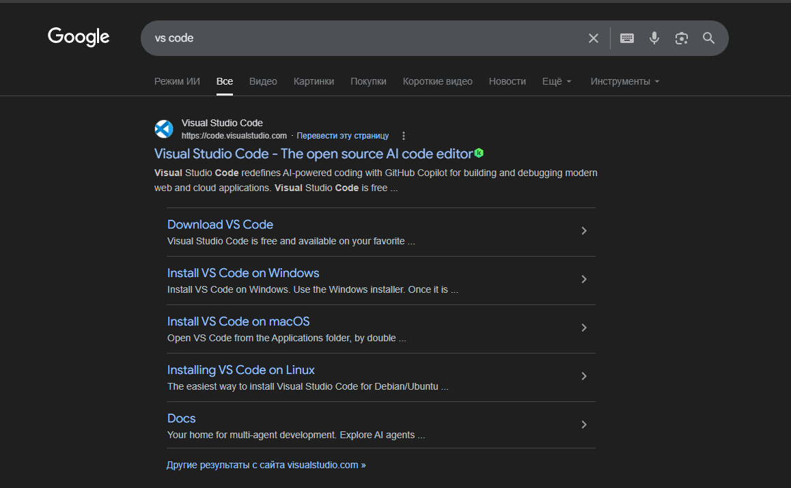
Скачивание установочного файла
На главной странице нажмите кнопку Download. Сайт автоматически предложит версию под вашу операционную систему (Windows, macOS или Linux).
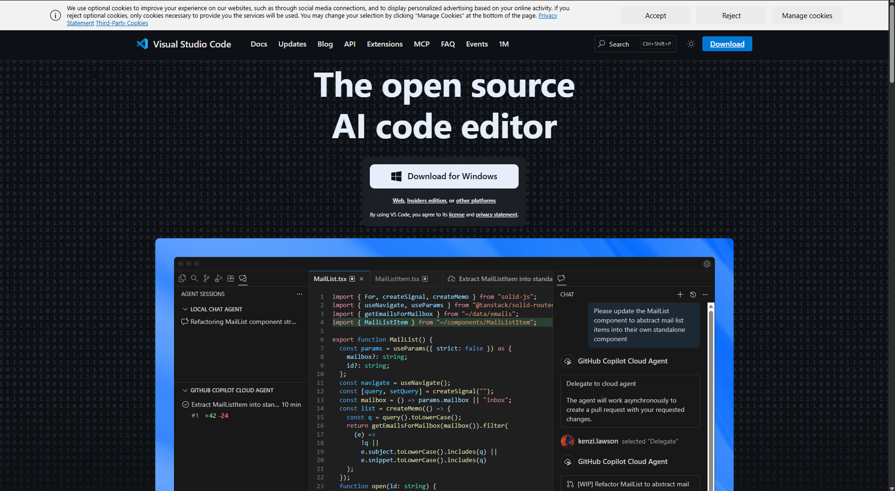
После нажатия начнётся загрузка установочного файла.
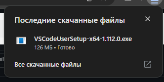
Запуск установщика
После завершения загрузки откройте скачанный файл или перейдите в папку Загрузки (Downloads) и запустите установку вручную.
Принятие лицензионного соглашения
В открывшемся окне установщика:
– выберите пункт I accept the agreement;
– нажимайте Next, пока не появится кнопка установки.
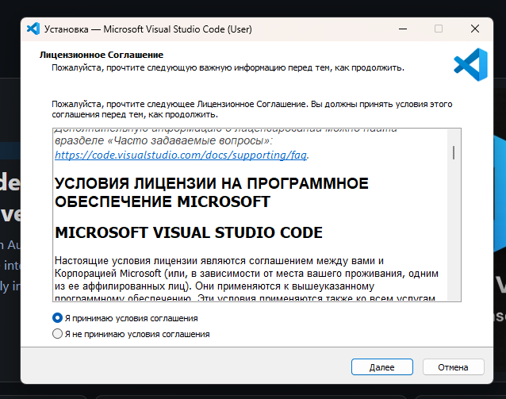
Выбор папки установки
Установщик предложит папку для установки программы. Рекомендуется оставить путь по умолчанию и нажать Next.
Выбор дополнительных параметров
На этом этапе рекомендуется включить полезные опции:
– add to PATH – позволяет запускать VS Code из командной строки;
– create a desktop icon – создаёт значок на рабочем столе;
– add "Open with Code" – добавляет пункт в контекстное меню.
Рекомендуется отметить все эти параметры, затем нажать Next.
Установка программы
Нажмите кнопку Install и дождитесь завершения процесса установки.
Завершение установки и запуск
После окончания установки нажмите Finish. Если установлена соответствующая галочка, программа запустится автоматически.
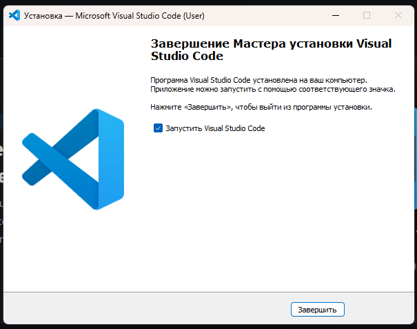
Первая проверка
После запуска убедитесь, что программа открылась корректно. При необходимости можно установить расширения через вкладку Extensions.
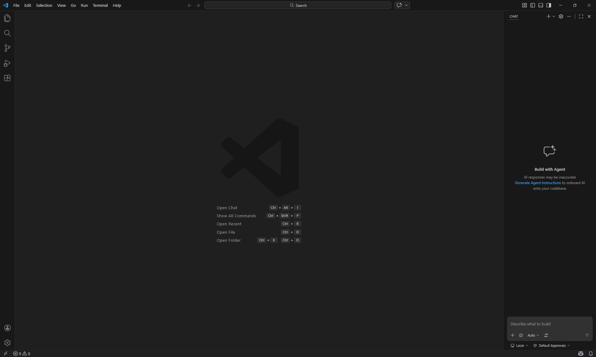
Привязка VS Code к GitHub
Git - это система контроля версий, которая отслеживает изменения в файлах. Она позволяет хранить историю проекта и при необходимости возвращаться к более ранним версиям.
GitHub - это онлайн-сервис для хранения Git-репозиториев. Он позволяет сохранять проекты в облаке, делиться ими и организовывать совместную работу.
Важно понимать разницу: Git - это технология, а GitHub - это веб-сервис, использующий эту технологию.
Для учебной деятельности это особенно полезно, так как позволяет:
– надёжно хранить историю учебных проектов;
– обмениваться файлами с одногруппниками или преподавателем;
– получать практический навык, востребованный в IT-среде.
Ниже рассматривается порядок регистрации на GitHub и привязки аккаунта к VS Code.
Регистрация на GitHub
Откройте браузер и перейдите на официальный сайт:
https://github.com/
Нажмите кнопку Sign up в правом верхнем углу.
Введите адрес электронной почты, придумайте пароль и имя пользователя (username).
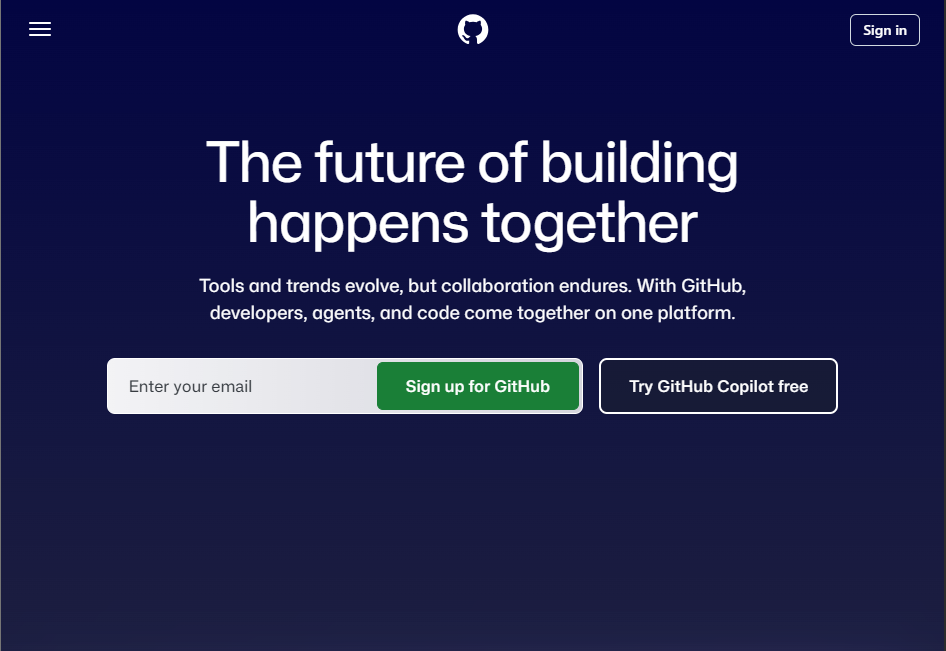
GitHub отправит на вашу электронную почту код подтверждения. Введите его в соответствующее поле на сайте.
Подтверждение электронной почты является обязательным шагом, без которого невозможно полноценно использовать сервис.
После подтверждения почты вы попадёте в личный кабинет GitHub. Регистрация завершена.
Установка Git на компьютер
В некоторых случаях одной регистрации на GitHub недостаточно, поэтому дополнительно требуется установить программу Git.
Скачайте установщик Git для вашей операционной системы с официального сайта:
https://git-scm.com/downloads
Запустите скачанный файл и следуйте инструкциям установщика. Настройки по умолчанию подходят для большинства пользователей.
После завершения установки рекомендуется перезапустить VS Code.
Привязка GitHub к VS Code
Откройте Visual Studio Code.
Посмотрите на левую боковую панель. В нижней части находится иконка с изображением шестерёнки или аватара. Это кнопка Accounts (Управление аккаунтами).
Нажмите на неё.
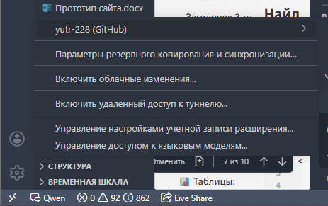
В появившемся меню выберите пункт Sign in to GitHub...
Браузер откроется автоматически и предложит авторизацию. Нажмите кнопку Authorize Visual-Studio-Code.
После подтверждения откроется окно с предложением открыть ссылку в приложении. Нажмите Open Link.
После этого VS Code автоматически активируется, а в нижнем левом углу появится имя вашего GitHub-аккаунта.
Привязка завершена.
Установка расширений в Visual Studio Code
Для расширения функциональных возможностей Visual Studio Code необходимо установить дополнительные расширения (Extensions).
Запустите программу Visual Studio Code.
В левой части окна найдите панель инструментов и нажмите на значок Extensions (Расширения) (иконка в виде четырёх квадратов).
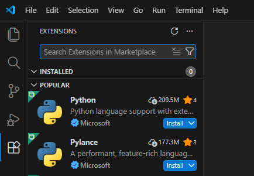
В открывшемся окне в строке поиска введите название нужного расширения.
В списке результатов выберите требуемое расширение.
Нажмите кнопку Install (Установить).
Дождитесь завершения установки. После установки расширение активируется автоматически.
Рекомендуемые расширения
Для работы с файлами, документами и анализом данных рекомендуется установить следующие расширения.
При необходимости можно установить дополнительные расширения в зависимости от вашей сферы работы. Некоторые расширения требуют дополнительной настройки после установки.
| № | Название | Описание | Фото |
|---|---|---|---|
| 1 | Office Viewer | Просмотр файлов .docx, .xlsx, .pptx прямо в VS Code | |
| 2 | Jupyter | Анализ данных и интерактивные отчёты | |
| 3 | Markdown All in One | Работа с текстами и отчётами в Markdown | |
| 4 | Excel Viewer | Просмотр Excel-файлов внутри редактора | 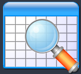 |
| 5 | Qwen | ИИ для генерации текстов и анализа информации | |
| 6 | vscode-icons | Иконки файлов для удобной навигации | |
| 7 | File Utils | Управление файлами и папками | 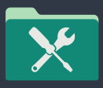 |
| 8 | Code Spell Checker | Проверка орфографии | 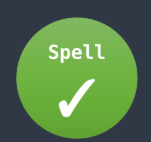 |
| 9 | Bookmarks | Быстрая навигация по файлам | |
| 10 | Better Comments | Цветовое выделение комментариев | 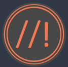 |
| 11 | PDF Viewer | Просмотр PDF-файлов | |
| 12 | Live Share | Совместная работа в реальном времени | |
| 13 | Russian Language Pack | Русификация интерфейса | |
| 14 | Book Reader | Чтение электронных книг | |
| 15 | GitHub Copilot Chat | ИИ-помощник для работы с кодом |
После установки расширений рекомендуется:
Убедиться, что расширения отображаются во вкладке Extensions (Расширения).
Перезапустить Visual Studio Code для корректной работы.
При необходимости выполнить дополнительную настройку расширений.
Создание папки для работы с файлами проекта
Для удобной организации файлов рекомендуется создать отдельную папку проекта перед началом работы в Visual Studio Code.
Откройте проводник операционной системы (Проводник в Windows или Finder в macOS).
Перейдите в директорию, где планируется хранение проекта (например, «Документы» или «Рабочий стол»).
Нажмите правой кнопкой мыши в пустой области. Выберите пункт «Создать» → «Папку».
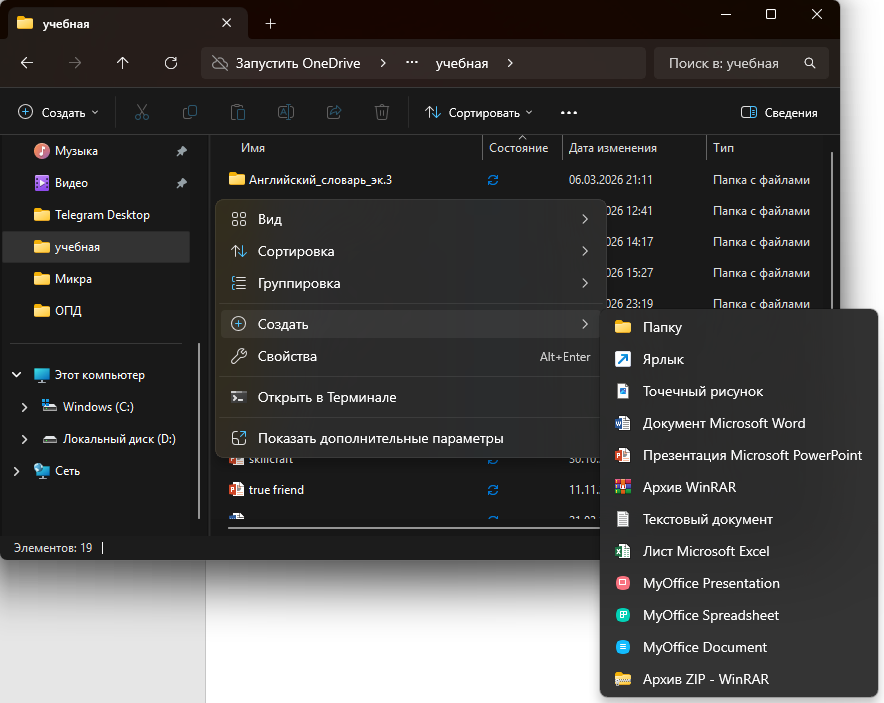
Введите название папки. Рекомендуется использовать понятное имя, отражающее
содержание проекта (например, Отчёт_по_практике,
Анализ_данных, Проект_1).
Запустите Visual Studio Code. В главном меню выберите: File → Open Folder (Файл → Открыть папку). В открывшемся окне найдите созданную папку.
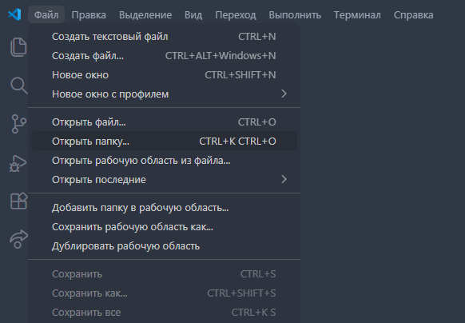
Выделите папку и нажмите кнопку «Выбрать папку». После выполнения действий папка отобразится в левой части окна (Explorer). В неё можно добавлять файлы и создавать структуру проекта.
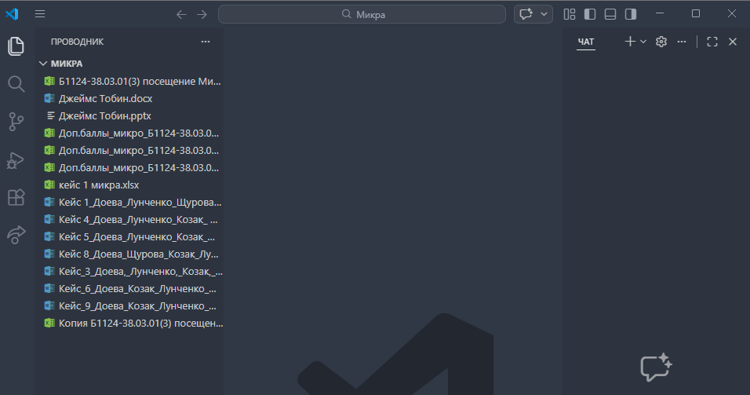
– храните все файлы проекта в одной папке;
– создавайте подпапки (например: Документы, Данные, Презентации);
– используйте понятные и единообразные названия файлов.
Работа с файлами в Visual Studio Code
После создания папки проекта пользователь может приступить к работе с различными учебными файлами. Visual Studio Code позволяет удобно организовать материалы, открывать документы и быстро переходить между ними.
Открытие файлов
Для открытия файла необходимо:
- открыть ранее созданную папку проекта через меню: File → Open Folder;
- в левой части окна (панель Explorer) выбрать нужный файл;
- щёлкнуть по нему левой кнопкой мыши.
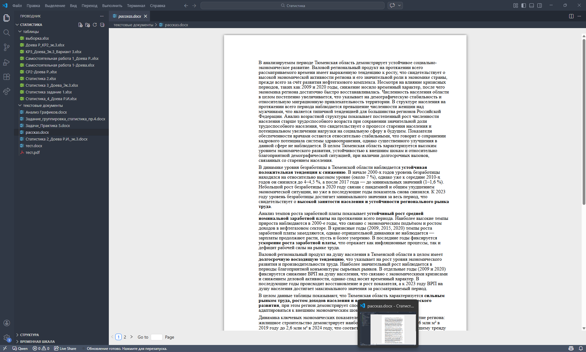
В Visual Studio Code можно работать с различными типами файлов, например:
- текстовые документы;
- таблицы;
- презентации;
- PDF-файлы;
- заметки и черновики.
Организация учебных материалов
Для удобства рекомендуется распределять файлы по тематическим папкам, например:
- документы – отчёты, рефераты, текстовые материалы;
- презентации – материалы для выступлений;
- данные – таблицы, результаты опросов, числовые данные;
- изображения – схемы, рисунки, иллюстрации;
- черновики – рабочие записи и промежуточные версии.
Такая структура позволяет быстрее находить нужные материалы и хранить их в одном месте.
Работа с несколькими файлами
При открытии нескольких файлов они отображаются во вкладках в верхней части окна программы. Пользователь может быстро переключаться между ними, не закрывая текущую работу. По умолчанию в Visual Studio Code файл может открываться в режиме предварительного просмотра. В этом режиме при открытии следующего файла предыдущий автоматически заменяется, и отдельная вкладка не создаётся.
Чтобы открыть несколько файлов одновременно, необходимо:
- В левой панели Explorer выбрать нужный файл.
- Чтобы файл открылся как отдельная вкладка, необходимо: дважды щёлкнуть по файлу левой кнопкой мыши или открыть файл и затем нажать на него повторно.
- После этого вкладка файла закрепится в верхней части окна.
- Аналогичным образом можно открыть и остальные файлы.
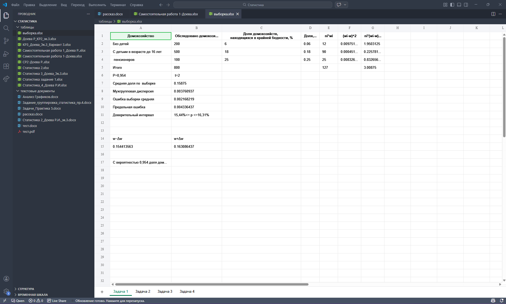
Поиск по файлам
Для быстрого поиска информации можно использовать встроенную функцию поиска. Для этого необходимо:
- Нажать сочетание клавиш Ctrl + F.
- Ввести нужное слово или фразу.
- Просмотреть найденные совпадения в документе.
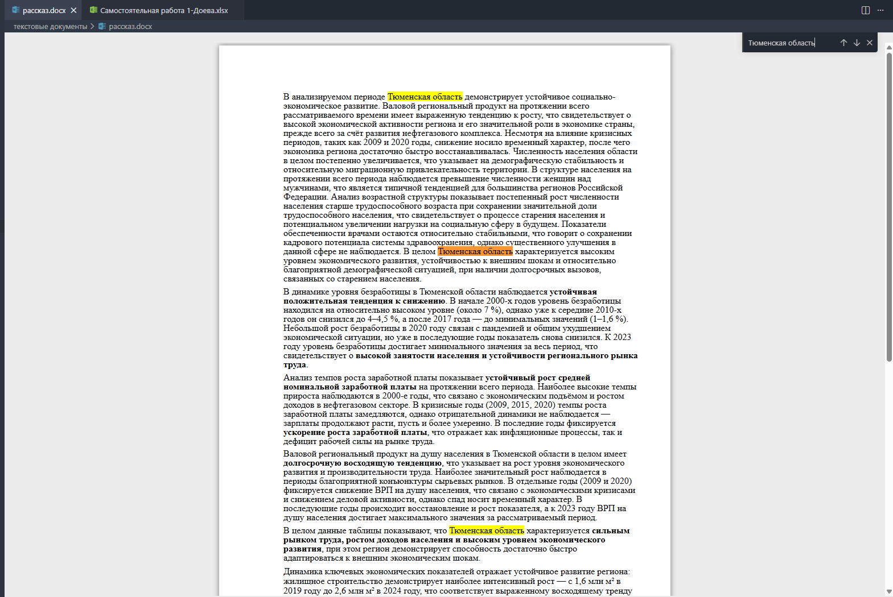
Использование нейросети в Visual Studio Code
Современные расширения Visual Studio Code позволяют использовать нейросетевые инструменты для решения учебных задач.
Работа с расширением Qwen
После установки соответствующего расширения (см. п. Установка расширений в Visual Studio Code) пользователь может открыть встроенное окно чата или панели помощи.
Для начала работы необходимо:
Открыть установленное AI-расширение в нижней части боковой панели Visual Studio Code.
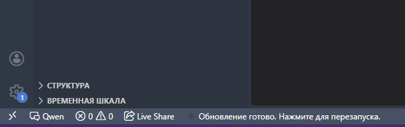
Ввести запрос в текстовое поле.
Дождаться ответа нейросети.
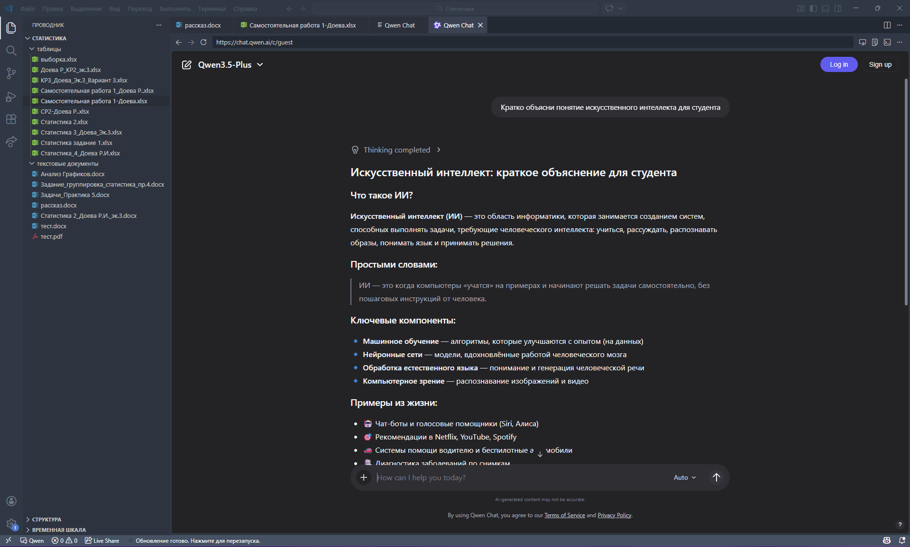
Работа с GitHub Copilot
В отличие от рекомендуемой нейросети Qwen, которая в большей степени используется как инструмент для получения текстовых ответов, формулирования идей, составления материалов и генерации содержимого по запросу, GitHub Copilot более тесно интегрирован в среду Visual Studio Code и лучше подходит для практической работы непосредственно с файлами проекта.
У GitHub Copilot есть ограничения по запросам: 2000 автодополнений кода в месяц и 2000 автодополнений кода в месяц (каждый вопрос в чате = 1 premium запрос).
После установки соответствующего расширения (см. п. Установка расширений в Visual Studio Code) пользователь может открыть встроенное окно чата или панели помощи. Для начала работы необходимо:
Открыть установленное AI-расширение в верхней части правой боковой панели
Visual Studio Code.
Или можно открыть через: Ctrl + Shift + P. Далее нужно
ввести: GitHub Copilot: Open Chat или Copilot Chat.
После этого откроется окно встроенного ИИ-помощника.
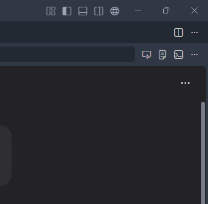
Ввести запрос в текстовое поле.
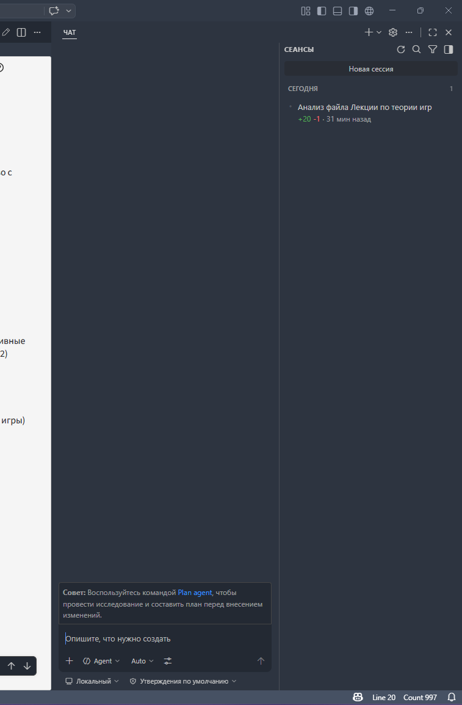
Дождаться ответа нейросети.
Настройка AI Tunnel и интеграция с VS Code
В стандартной конфигурации Visual Studio Code возможности работы с нейросетями ограничены встроенными или официально поддерживаемыми решениями (например, GitHub Copilot). Однако в ряде случаев пользователю требуется более гибкий доступ к различным моделям искусственного интеллекта, таким как ChatGPT, Claude, Qwen, Kimi и другим.
Сервис AI Tunnel (https://aitunnel.ru) предоставляет такую возможность, выступая в роли единого API-шлюза для подключения к различным языковым моделям без необходимости использования VPN.
Это особенно актуально в условиях ограниченного доступа к зарубежным сервисам.- сам сервис AI Tunnel является бесплатным;
- однако использование моделей платное – списание средств происходит за обработку запросов;
- стоимость зависит от выбранной модели и объёма передаваемых данных (входных и выходных токенов).
Таким образом, AI Tunnel целесообразно использовать в случаях:
- при необходимости профессиональной работы с ИИ;
- при интеграции ИИ в собственные проекты;
- при выполнении сложных задач (анализ, генерация, обработка данных);
- при разработке программных продуктов с использованием ИИ.
Интеграция с Visual Studio Code осуществляется через расширение Cline, которое позволяет напрямую взаимодействовать с моделями внутри редактора.
Регистрация в сервисе AI Tunnel
Регистрация в AI Tunnel является обязательным этапом, поскольку доступ к нейросетевым моделям осуществляется через API, требующий авторизации. В рамках данного сервиса создаётся уникальная учётная запись пользователя, к которой привязываются: API-ключи, баланс средств и история запросов.
Откройте любой современный браузер (например, Google Chrome, Microsoft Edge или Mozilla Firefox). В адресной строке введите: https://aitunnel.ru. Либо можно прямо перейти по ссылке с электронной версии методички.
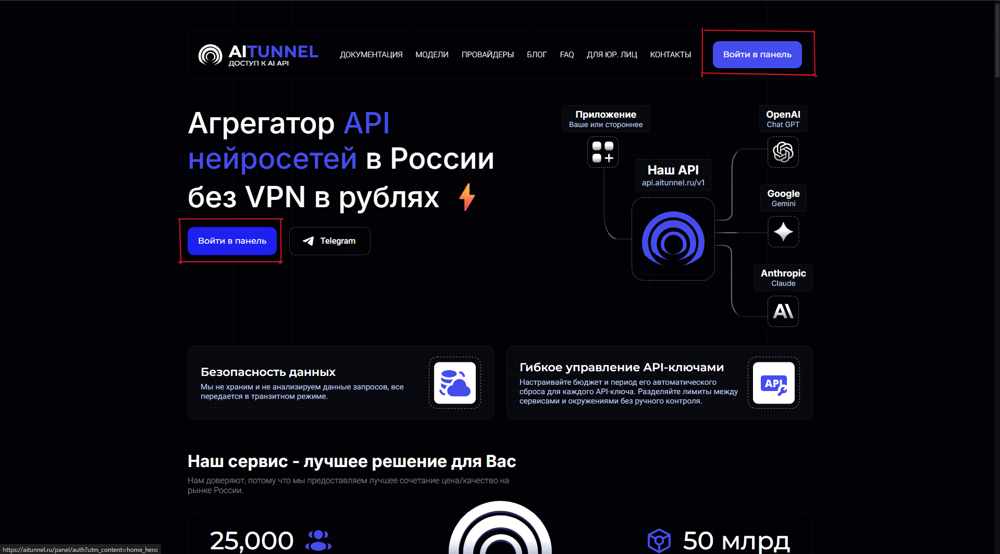
На главной странице найдите кнопку «Войти в панель» или «Sign up». В открывшейся форме введите адрес электронной почты и пароль. Также можно воспользоваться готовыми сервисами для регистрации.
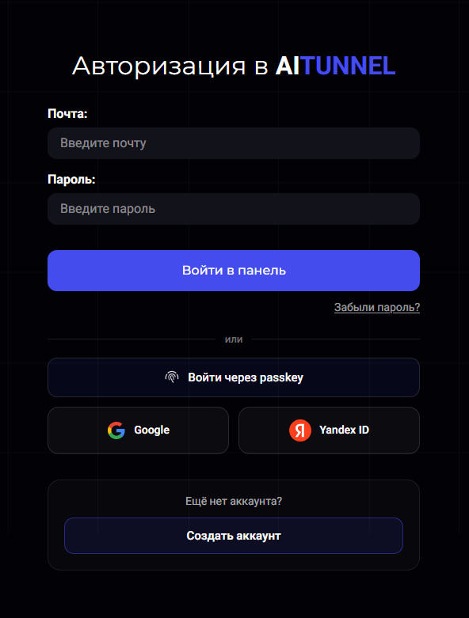
Перейдите в почтовый ящик, указанный при регистрации. Найдите письмо от AI Tunnel. Откройте письмо и перейдите по ссылке подтверждения.
Вернитесь на сайт AI Tunnel. Нажмите кнопку «Войти» и введите логин и пароль.
Просмотр стоимости моделей и тарифов
После регистрации и входа в сервис AI Tunnel рекомендуется ознакомиться со стоимостью использования различных нейросетевых моделей. Это особенно важно, поскольку разные модели существенно отличаются по цене, скорости работы и качеству генерации.
Откройте главную страницу сайта и пролистайте в самый низ. Перейдите в раздел «Модели».
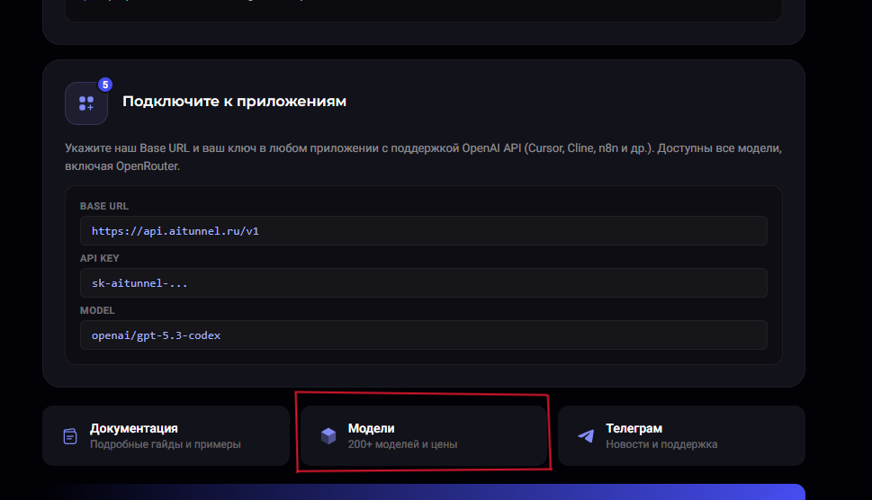
В открывшемся списке выберите интересующую модель. После открытия страницы модели обычно отображается следующая информация:
- Model ID – техническое название модели, которое используется при подключении в VS Code и Cline;
- стоимость входящих токенов (Input) – цена за обработку текста, который отправляет пользователь;
- стоимость исходящих токенов (Output) – цена за генерацию ответа нейросетью;
- контекстное окно – максимальный объём текста, который модель может обработать за один запрос;
- поддержка функций – работа с кодом, файлами, изображениями, reasoning-режимами и др.;
- провайдер модели – OpenAI, Anthropic, Qwen, DeepSeek, Google и т.д.
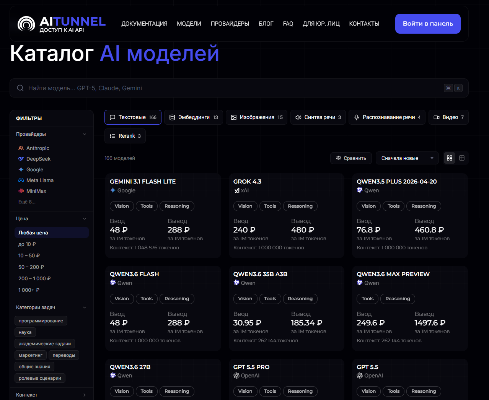
В каталоге доступна система фильтрации:
- по провайдеру – отображать модели только определённой компании;
- по стоимости – выбрать наиболее дешёвые или производительные;
- по категории задач – для генерации текста, программирования, анализа документов;
- по размеру контекстного окна – для работы с большими документами.
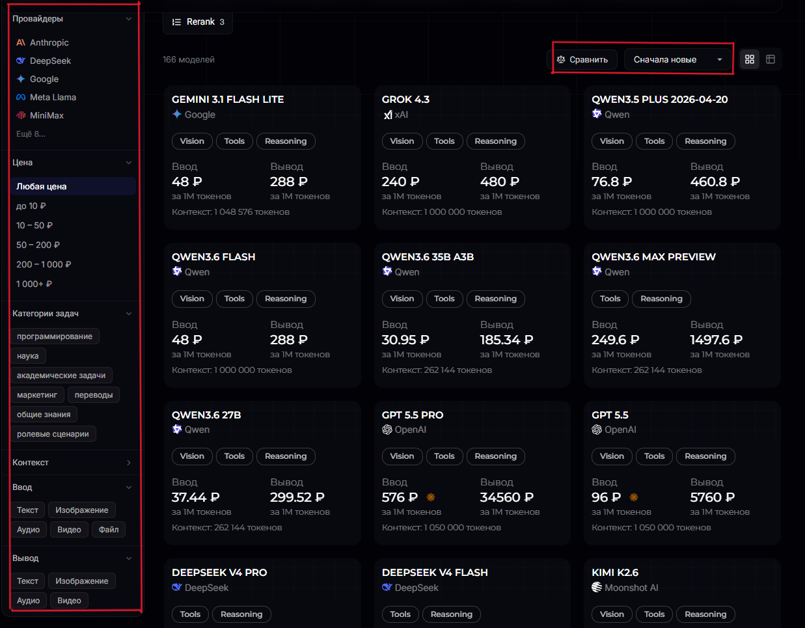
Пополнение баланса
Несмотря на то, что сам сервис AI Tunnel является бесплатным, выполнение запросов к моделям осуществляется на платной основе. Оплата производится за фактическое использование вычислительных ресурсов.
В боковой панели, на главной или в верхнем правом углу найдите раздел «Пополнение баланса».
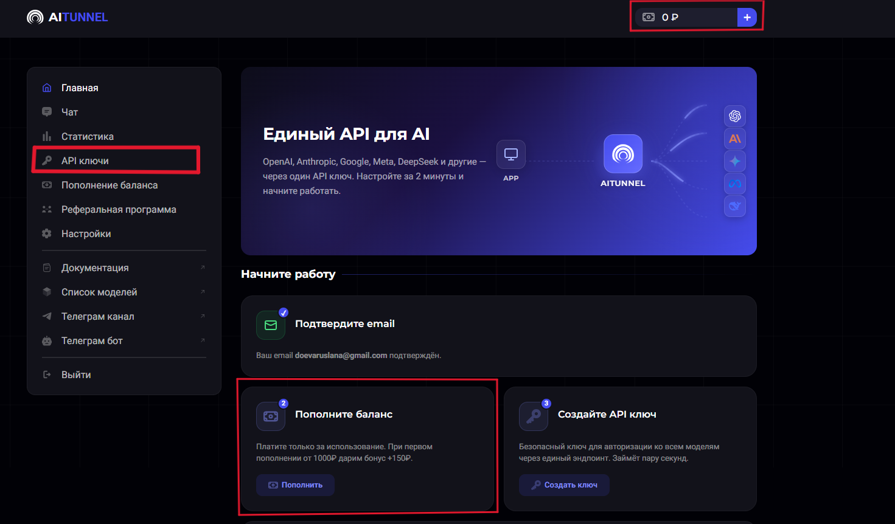
Укажите сумму (минимальная – 399 рублей). Выберите способ оплаты. Для учебных задач обычно достаточно небольшого баланса.
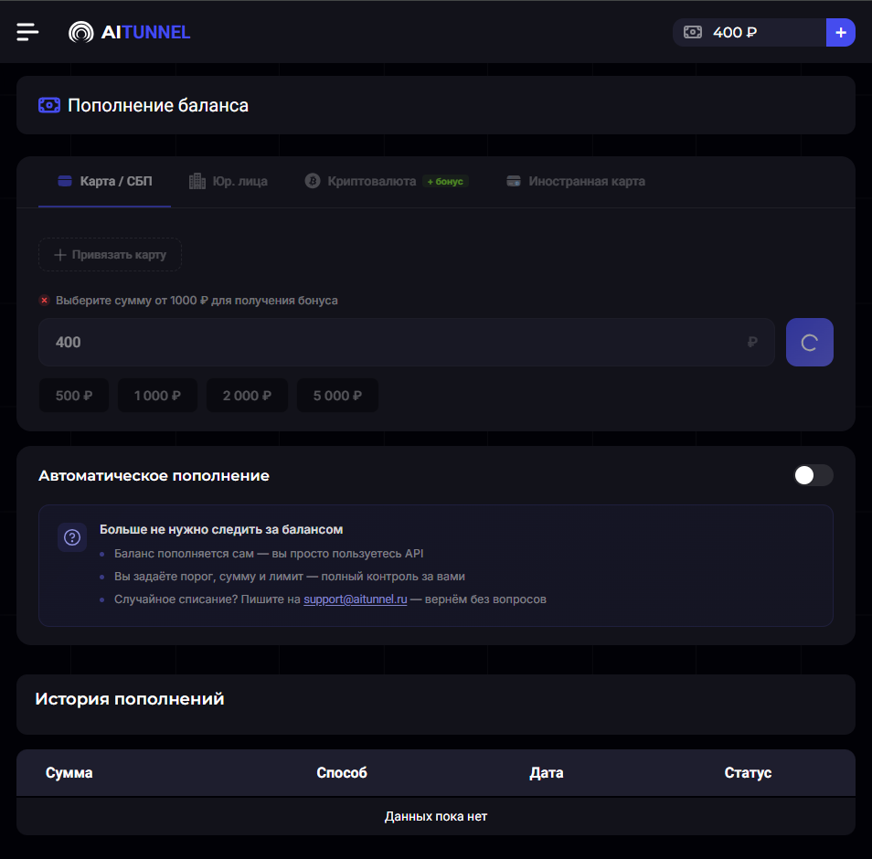
Подтвердите платёж. Дождитесь зачисления средств – баланс отобразится в правом верхнем углу.
Получение и настройка API-ключа
API-ключ является основным механизмом аутентификации при работе с нейросетевыми моделями. Без пополнения баланса создать ключ нельзя.
В боковой панели или на главной странице найдите раздел «API» («API Keys» или «Настройки API»).
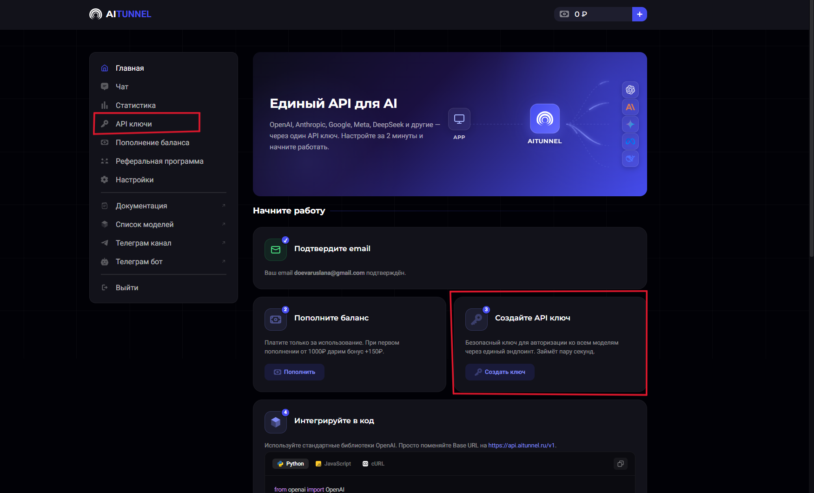
Нажмите кнопку «Создать ключ» или «Generate API Key». Система создаст уникальную строку вида sk-xxxxxxxxxxxxxxxx. При создании укажите:
- название ключа (например, VS Code, Cline) – для вашего удобства;
- при желании ограничьте бюджет и срок действия ключа.
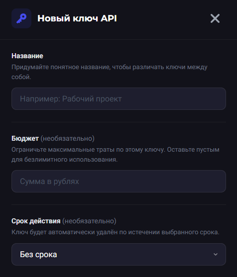
Скопируйте полученный ключ и сохраните его в защищённом месте.
Установка расширения Cline и настройка подключения (Cline + AI Tunnel)
Расширение Cline обеспечивает интеграцию нейросетевых моделей непосредственно в среду разработки.
Запустите Visual Studio Code. В левой панели нажмите на иконку Extensions. Введите в строке поиска Cline.
Выберите нужное расширение и нажмите Install. Дождитесь завершения установки.
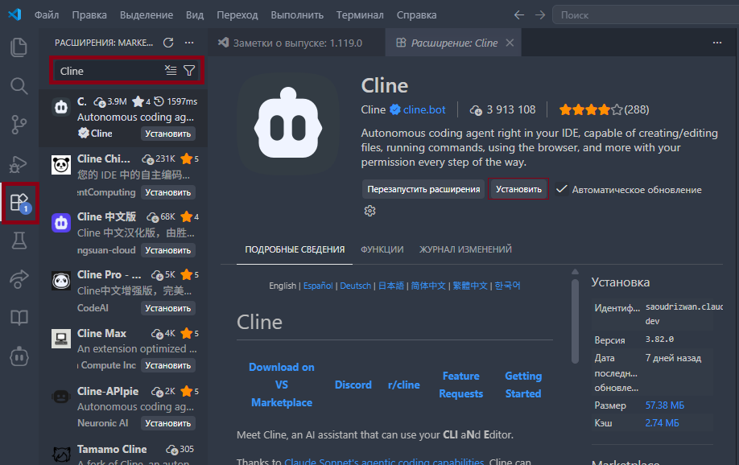
Откройте настройки Cline: Ctrl+Shift+P → введите Cline Settings. Или откройте расширение на левой боковой панели и нажмите значок шестерёнки в правом верхнем углу.
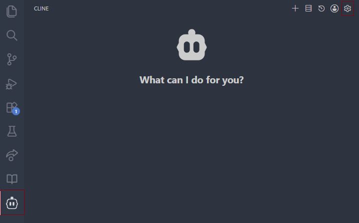
В настройках найдите API Configuration. Заполните параметры:
- API Provider – выберите
OpenAIилиOpenAI Compatible(AI Tunnel совместим со стандартом OpenAI).Даже если вы используете модели DeepSeek, Qwen, Kimi, Claude или другие, в поле API Provider всё равно обычно выбирается OpenAI или OpenAI Compatible. AI Tunnel работает как универсальный «посредник» и предоставляет единый API-интерфейс, совместимый со стандартом OpenAI. То есть, запросы отправляются в формате OpenAI API, а уже внутри AI Tunnel перенаправляет их в нужную модель. - OpenAI API Key – вставьте API-ключ, полученный в AI Tunnel.
- Model – укажите Model ID (возьмите со страницы модели в каталоге AI Tunnel).
- Reasoning Effort – Medium (для обычной работы) / High (для сложного анализа) / Low (быстрые ответы).
- Advanced Settings – при необходимости укажите Base URL:
https://api.aitunnel.ru/v1.
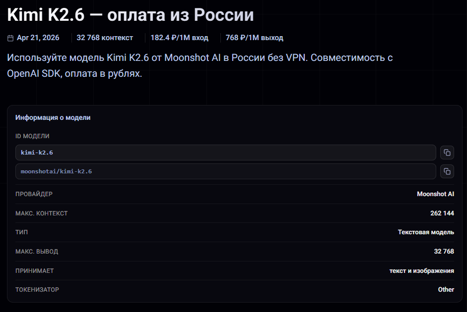
Сохраните изменения, нажав Done. Теперь запросы из VS Code будут отправляться через AI Tunnel к выбранной модели.
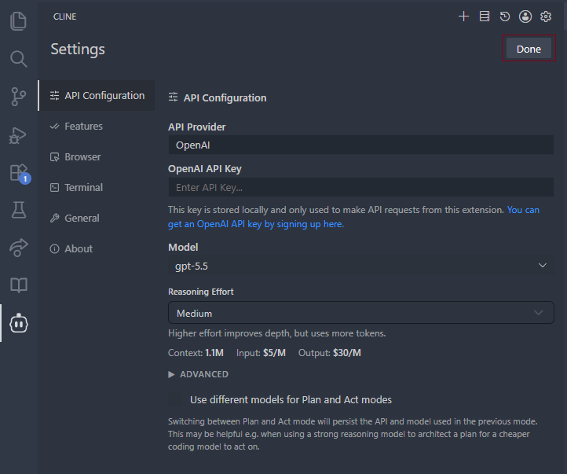
Введите простой запрос, например «напиши короткое описание технологии искусственного интеллекта». Если настройка выполнена корректно, появится ответ и произойдёт списание средств.
Основные элементы интерфейса Cline
Содержит кнопки: создание нового чата, история диалогов, настройки подключения моделей, управление аккаунтом, MCP Servers. Через эту панель выполняется настройка API и переключение между моделями. MCP (Model Context Protocol) Servers – это специальные серверы или п модули, которые позволяют ИИ-ассистенту получать дополнительный доступ к внешним инструментам, данным и функциям.
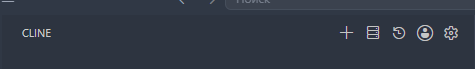
Отображаются сообщения пользователя и ответы модели. В верхней части ответа иногда указывается стоимость обработки запроса – это позволяет контролировать расходы.
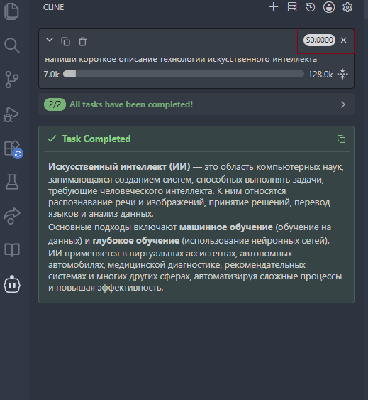
Текстовое поле для запросов. Справа отображается текущая используемая модель (например, moonshot:kimi-k2.5). Нажав на название, можно переключить модель.
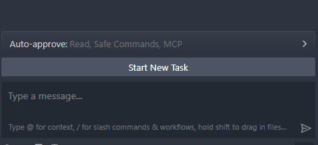
Plan – режим анализа и планирования (объясняет, не изменяет файлы). Act – режим активного выполнения действий (создаёт, редактирует файлы, изменяет структуру проекта). Перед действиями Cline запрашивает подтверждение.
Знак @ – добавление контекста (файлы, папки, открытые документы). Пример: @report.docx исправь оформление по ГОСТ.
Знак / – slash‑команды: /help, /newtask и др.
Нажав на значок +, можно перетаскивать файлы, изображения, PDF, таблицы прямо в чат.
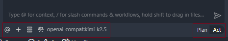
Настройка агентов: системные файлы AGENTS.md, QWEN.md, Project.md и другие
Агент – это ИИ-помощник, встроенный в вашу среду разработки (VS Code). Он может читать и создавать файлы, отвечать на вопросы, писать код, анализировать документы. Примеры агентов: Claude Code (от Anthropic), Qwen Code, GitHub Copilot, Cursor. В отличие от простого чата в браузере, агент имеет доступ к файловой системе вашего проекта и может выполнять действия (создать файл, изменить код, запустить команду).
По умолчанию агент не знает ваших предпочтений: на каком языке отвечать, какой стиль кода использовать, как организован проект, какие библиотеки запрещены. Каждый раз объяснять это вручную – утомительно.
Файлы конфигурации позволяют задать правила один раз, и агент будет им следовать в каждой сессии, экономя ваше время и обеспечивая единообразие. Обычно используют следующие расширения:
- .txt – обычный текстовый файл без форматирования. Только буквы, цифры и знаки. Подходит для заметок, черновиков, простых записей.
- .md – файл в формате Markdown. Позволяет делать заголовки, списки, жирный/курсивный текст, таблицы, ссылки и вставлять код. При этом остаётся читаемым и в обычном блокноте. Удобен для конспектов, отчётов, инструкций и документации.
В экосистеме VS Code сложилось несколько стандартов. Самые важные для студента представлены в таблице 5.
| Файл | Для кого? | Где размещать? |
|---|---|---|
| AGENTS.md | Универсальный – понимают Qwen Code, Claude Code, Copilot (частично), Cursor | В корне проекта или в папке .qwen/ |
| CLAUDE.md | Claude Code (агент от Anthropic) | Корень проекта или глобально ~/.claude/ |
| copilot-instructions.md | GitHub Copilot | Папка .github/ в корне проекта |
| .cursorrules | Cursor (редактор на базе VS Code) | Корень проекта |
| Project.md | Произвольный – часто используется как описание проекта для человека и для ИИ | Корень проекта |
Далее рассмотрим, как создать и настроить файл для агента.
Определитесь с агентом, которым вы пользуетесь. Для большинства учебных проектов достаточно создать AGENTS.md в корневой папке – он будет работать и с Qwen, и с Copilot (при поддержке), и с Cursor.
Создайте файл в нужном месте. Откройте VS Code, в вашей папке проекта
(например, Курсовая_работа). Создайте новый файл:
- для AGENTS.md: просто создайте файл
AGENTS.mdв корне; - для copilot-instructions.md: сначала создайте папку
.github, а внутри – файлcopilot-instructions.md; - для CLAUDE.md: создайте файл
CLAUDE.mdв корне.
Напишите правила (содержимое файла). Правила пишутся на естественном языке (русском или английском) в формате Markdown. Чем чётче – тем лучше.
Базовый шаблон для AGENTS.md (учебный проект):
# Инструкции для ИИ-агента ## 1. Стиль общения - Отвечай на русском языке. - Используй академический (научно-учебный) стиль. Избегай разговорных выражений. - Если информации недостаточно – скажи об этом прямо, не придумывай. ## 2. Формат ответов - По возможности структурируй ответ: списки, заголовки, таблицы. - Если генерируешь код (Python, HTML, JavaScript) – добавляй комментарии на русском. - Код должен быть полностью самодостаточным (все стили и скрипты внутри одного файла, если не указано иное). ## 3. Работа с файлами - При создании нового файла всегда указывай расширение (.md, .html, .py и т.д.). - Не изменяй файлы без явного разрешения, если только задача не требует правки. - Сохраняй созданные файлы в текущую папку, если не указан другой путь. ## 4. Структура проекта - `/data` – исходные данные (CSV, Excel). - `/docs` – методички, статьи, PDF. - `/src` – скрипты и код. - `/output` – итоговые отчёты, презентации, результаты. ## 5. Ограничения - Не предлагай решения, требующие платных подписок (если это не оговорено). - Не удаляй файлы из папок `/data` и `/docs`. - При сомнениях запрашивай уточнение.
Пример для copilot-instructions.md (более короткий, так как Copilot специфичен для кода):
# Copilot Instructions - Ответы давай на русском языке. - Для Python используй стиль PEP 8. - Для HTML/CSS/JS создавай отдельные файлы или встроенный код по запросу. - При генерации презентаций обязательно добавляй кнопки навигации и поддержку стрелок.
Пример для CLAUDE.md (для Claude Code):
# Claude Code Project Instructions ## Project context This is a student coursework project on "Neural Networks in Education". ## Rules - Always respond in Russian. - Use academic style. - Never hallucinate facts. If you don't know, say so. - Prefer creating new files over displaying code in chat. - For HTML presentations, use light background, large headings, and arrow key navigation. ## Project structure See `README.md` for details.
📝 Готовые шаблоны AGENTS.md для разных проектов
Ниже приведены готовые шаблоны файлов AGENTS.md для разных типов учебных работ.
Скопируйте нужный шаблон, создайте файл AGENTS.md в корне вашего проекта и вставьте содержимое.
Подходит для написания курсовых проектов, ВКР, дипломных работ.
# Инструкции для ИИ-агента (курсовая работа)
## 1. Стиль общения
- Отвечай на русском языке.
- Используй академический (научно-учебный) стиль.
- Избегай разговорных выражений, жаргона, слов "типа", "короче".
- Не используй местоимения "я", "мы" - пиши безлично.
- Если информации недостаточно - скажи об этом прямо, не придумывай.
## 2. Структура ответов
- Структурируй ответ: заголовки, списки, таблицы.
- При генерации текста для курсовой соблюдай структуру:
1. Введение (актуальность, цель, задачи)
2. Основная часть (разделы и подразделы)
3. Заключение (выводы)
- Код (если есть) снабжай комментариями на русском.
## 3. Работа с файлами
- Создавай файлы с расширениями: .md (текст), .html (презентации), .txt (черновики).
- Не изменяй файлы без явного разрешения.
- Сохраняй новые файлы в текущую папку проекта.
## 4. Папки проекта
- `/data` - исходные данные (CSV, Excel, опросы)
- `/docs` - статьи, методички, PDF
- `/src` - скрипты и код (если есть)
- `/output` - итоговые файлы (курсовая, презентация)
- `/images` - рисунки, схемы, скриншоты
## 5. Ограничения
- Не предлагай решения, требующие платных подписок.
- Не удаляй файлы без разрешения.
- При сомнениях - уточняй у пользователя.
AGENTS.md в корне вашего проекта.Для отчётов о прохождении практики, дневников, аналитических справок.
# Инструкции для ИИ-агента (отчёт по практике)
## 1. Стиль общения
- Отвечай на русском языке.
- Стиль - официально-деловой, документальный.
- Избегай лишних прилагательных, используй факты и цифры.
- Пиши чётко, без воды.
## 2. Типовые разделы отчёта
- Введение (цели и задачи практики)
- Характеристика организации / места практики
- Описание выполненной работы
- Анализ результатов
- Заключение и выводы
- Приложения (если есть)
## 3. Работа с файлами
- Создавай файлы в формате .md или .docx (через Office Viewer).
- Для таблиц используй формат .csv или таблицы в Markdown.
- Сохраняй все отчёты в папку `/reports`.
## 4. Формат ответов
- По возможности используй нумерованные списки.
- Важные даты и цифры выделяй **жирным**.
- Не добавляй художественные отступления - только факты.
AGENTS.md в корне вашего проекта.Для генерации слайд-шоу, учебных презентаций в формате HTML.
# Инструкции для ИИ-агента (HTML-презентация)
## 1. Требования к HTML-презентации
- Создавай полноценный HTML-файл со встроенными стилями (CSS) и скриптами (JS).
- Кнопки навигации: «Назад» и «Вперёд».
- Поддержка клавиатуры: стрелки влево/вправо для переключения слайдов.
- Используй светлый фон, крупные заголовки, карточки.
- Шрифты: читабельные (Arial, Segoe UI, Roboto).
## 2. Структура слайдов
- Первый слайд - титульный (тема, автор).
- Последний слайд - выводы или "Спасибо за внимание".
- Каждый слайд - отдельный блок с классом "slide".
## 3. Оформление
- Добавь акцентные цвета (голубой, синий, фиолетовый).
- На мобильных - адаптивная вёрстка (flex, grid, медиа-запросы).
- Не используй внешние файлы - всё внутри одного .html.
## 4. Дополнительно
- При необходимости добавь изображения через тег <img src="images/...">.
- Указывай alt-текст для всех картинок.
AGENTS.md в корне вашего проекта.Для курсовых и проектов по анализу данных, таблиц, CSV.
# Инструкции для ИИ-агента (анализ данных)
## 1. Язык и стиль
- Отвечай на русском.
- Используй технический, но понятный стиль.
- Код пиши на Python с комментариями на русском.
## 2. Работа с данными
- При работе с CSV/Excel используй pandas.
- Показывай первые 5 строк данных (df.head()).
- Выводи статистику: df.describe(), df.info().
## 3. Визуализация
- Для графиков используй matplotlib или seaborn.
- Добавляй подписи осей, заголовки, легенды.
## 4. Структура ответов
- Сначала краткий вывод: "Что вижу в данных?".
- Потом код и графики.
- В конце - итоговый анализ и рекомендации.
## 5. Папки проекта
- `/data` - исходные CSV/Excel
- `/notebooks` - Jupyter-файлы
- `/output` - результаты обработки
AGENTS.md в корне вашего проекта.1. Скопируйте содержимое нужного шаблона.
2. В VS Code откройте папку вашего проекта.
3. Создайте новый файл
AGENTS.md в корне проекта.4. Вставьте скопированный текст и сохраните файл.
5. Агент (Qwen Code, Claude Code, Cline) будет автоматически следовать этим инструкциям.
Проверьте, что агент видит файл
- для Qwen Code: просто напишите в чате «Какие правила ты видишь в этом проекте?» – он должен прочитать AGENTS.md;
- для Copilot: инструкции из copilot-instructions.md применяются автоматически (проверить можно, задав вопрос, требующий стилевого решения);
- для Claude Code: запустите
claudeв терминале в папке проекта – он автоматически загрузит CLAUDE.md.
Используйте в работе. После настройки вы можете давать агенту короткие запросы, и он будет следовать прописанным правилам. Например:
- «Создай HTML-презентацию на тему „История ДВФУ“» – агент автоматически сделает файл .html с кнопками, русским языком и академическим стилем.
- «Проанализируй файлы из папки /docs и напиши конспект в output/conspekt.md» – агент будет знать, куда сохранять результат.
Как писать хорошие инструкции?
Эффективность AGENTS.md сильно зависит от качества написанных инструкций. Вот ключевые правила:
Пишите кратко и по делу: инструкции должны быть короткими, чёткими и релевантными для всех задач в проекте. Если файл будет перегружен, агент может просто его проигнорировать.
Отдавайте предпочтение "что делать", а не "как не надо": вместо списка запретов лучше писать чёткие позитивные инструкции. Агенты лучше следуют прямым указаниям, а не пытаются обойти ограничения.
Что должно быть в файле:
- общая информация: краткое описание проекта и его архитектуры;
- технологический стек: основные языки, фреймворки, библиотеки;
- структура проекта: карта директорий с пояснениями, что где лежит;
- код-стайл и соглашения: требования к форматированию, именованию переменных, написанию комментариев;
- критичные запреты, например, «никогда не удаляй файлы из папки /data»;
- команды для сборки и тестов: как запустить проект, проверить код и убедиться, что изменения ничего не сломали.
Практическое применение Visual Studio Code
Visual Studio Code может использоваться студентами не только для хранения и просмотра файлов, но и как удобный инструмент для организации учебной деятельности, подготовки материалов и работы с нейросетевыми технологиями. Visual Studio Code превосходит другие сервисы при подготовке отчётов и рефератов тем, что объединяет в одной среде работу с текстами, файлами и источниками, позволяет удобно структурировать большие проекты, быстро искать информацию по всем документам, использовать расширения (для PDF, таблиц, Markdown и ИИ), сохранять историю изменений через Git и при этом работает быстро даже на слабых устройствах без необходимости постоянного подключения к интернету.
Подготовка отчётов и рефератов
Visual Studio Code можно использовать для написания и структурирования учебных текстов, таких как отчёты, рефераты, эссе, курсовые и аналитические материалы.
Откройте папку проекта в Visual Studio Code.
Создайте новый файл для чернового текста. После названия обязательно нужно указать расширение файла.
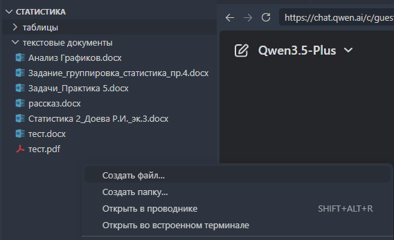
Открытие файла для ввода текста. После создания файл автоматически откроется в центральной части окна Visual Studio Code. Именно в этом окне выполняется набор текста. Следует учитывать, что Visual Studio Code отображает текст в виде строк, как в редакторе. Несмотря на внешний вид, файл можно использовать как обычный черновик текста.
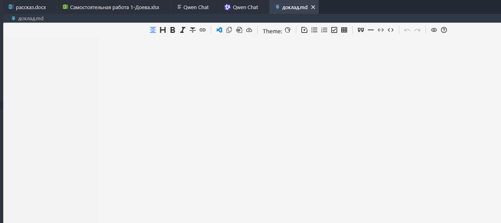
Подготовьте структуру будущей работы. Используйте нейросеть для составления плана, подготовки черновика и редактирования текста.
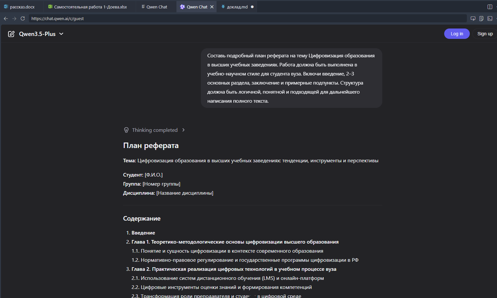
Написание основной части по разделам. Нейросеть может сгенерировать реферат одним запросом, однако такой способ не рекомендуется как основной, поскольку итоговый текст часто требует существенной проверки, редактирования, уточнения структуры и адаптации под требования учебного задания. Наиболее эффективным является поэтапный способ подготовки работы.
Сохранение файла. Для этого можно нажать сочетание клавиш Ctrl + S или выбрать в верхнем меню File → Save (Файл → Сохранить). Рекомендуется сохранять изменения после каждого важного фрагмента текста, чтобы избежать потери информации.
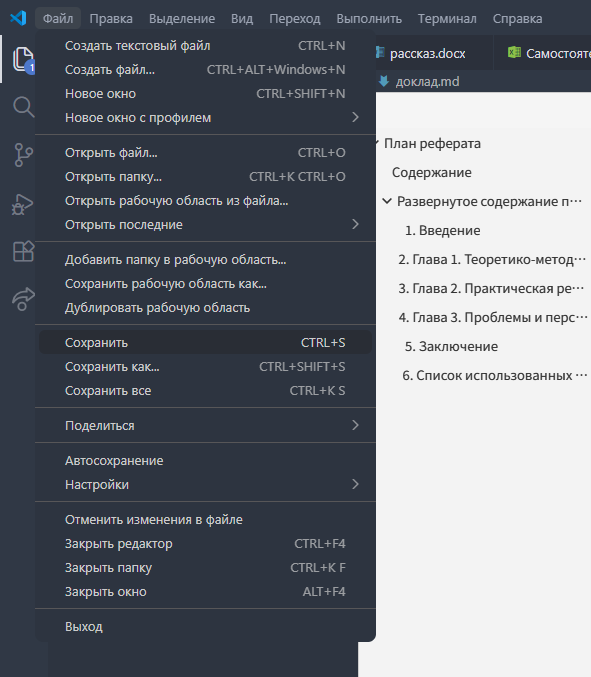
Открытие файла через Word. Иногда можно не копировать текст вручную, а открыть файл напрямую в Word:
- открыть Microsoft Word;
- выбрать: Файл → Открыть;
- найти ранее сохранённый файл;
- открыть его. После этого Word может загрузить текст из файла.
Но важно:
- структура иногда отображается неидеально;
- переносы строк могут сбиваться;
- форматирование всё равно придётся настраивать вручную.
Поэтому основным рекомендуемым способом остаётся копирование текста.
Примеры запросов к нейросети
- «Составь подробный план реферата на тему [название темы]. Работа должна быть выполнена в учебно-научном стиле для студента вуза. Включи введение, 2–3 основных раздела, заключение и примерные подпункты. Структура должна быть логичной, понятной и подходящей для дальнейшего написания полного текста»;
- «Проверь структуру данного реферата и скажи, всё ли изложено логично и последовательно»;
- «Сделай текст более связным и плавным между разделами»;
- «Проверь, соответствует ли текст учебно-научному стилю»;
- «Напиши введение к реферату на тему [название темы]. Объём – 1–2 абзаца. Текст должен быть написан в официально-научном стиле, без сложных терминов, но с логичным обоснованием актуальности темы»;
- «Переформулируй следующий текст в более официальный и академический стиль, сохранив смысл и структуру. Текст должен подойти для студенческой учебной работы»;
- «Сформулируй заключение по теме [название темы]. В выводе кратко подведи итоги, выдели значимость темы и оформи текст в научно-учебном стиле».
Создание презентации в Visual Studio Code с помощью HTML
В Visual Studio Code студент может подготовить презентацию не только в виде текстового плана, но и в виде HTML-презентации, то есть набора слайдов, открываемых в браузере. Создание презентации в Visual Studio Code с помощью HTML аналогично разработке веб-страницы: каждый слайд оформляется как отдельный блок, структура и содержание задаются с помощью HTML, внешний вид настраивается через CSS (цвета, шрифты, анимации). Такой подход позволяет создавать гибкие, интерактивные презентации с полной настройкой дизайна и логики отображения, в отличие от классических инструментов вроде Microsoft PowerPoint.
Создание файла для презентации. После открытия рабочей папки в Visual Studio Code необходимо создать новый файл, в котором будет размещён код будущей презентации. Для этого необходимо:
- в левой панели Explorer нажать кнопку «Новый файл»;
- ввести название файла, например:
presentation.html; - нажать Enter.
Именно в этот файл в дальнейшем будет вставляться HTML-код презентации, сгенерированный с помощью нейросети или доработанный вручную.
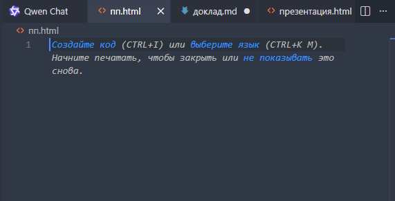
Подготовка содержания презентации. Перед генерацией HTML-кода рекомендуется сначала продумать содержание будущей презентации. На этом этапе желательно определить:
- тему презентации;
- предполагаемое количество слайдов;
- структуру выступления;
- ключевые тезисы;
- основные выводы.
Это необходимо для того, чтобы нейросеть могла сгенерировать более логичную и качественную презентацию.
Использование нейросети для создания структуры презентации. Если студенту сложно самостоятельно составить структуру, можно сначала обратиться к нейросети с запросом на создание плана слайдов.
Пример промта:
После получения ответа студент может использовать предложенную структуру как основу будущей презентации.
Подготовка краткого содержания слайдов. После того как структура определена, нейросеть можно использовать для подготовки краткого содержания каждого слайда.
Пример промта:
Генерация полного HTML-кода презентации. После подготовки структуры и содержания можно перейти к созданию самой HTML-презентации. Для этого необходимо попросить нейросеть не просто составить текст, а сгенерировать полный HTML-код презентации.
Пример промта:
Сохранение сгенерированного кода. Попросите нейросеть самостоятельно создать файл в вашей папке и записать туда сгенерированный код. После этого HTML-презентация уже будет сохранена как рабочий файл проекта.
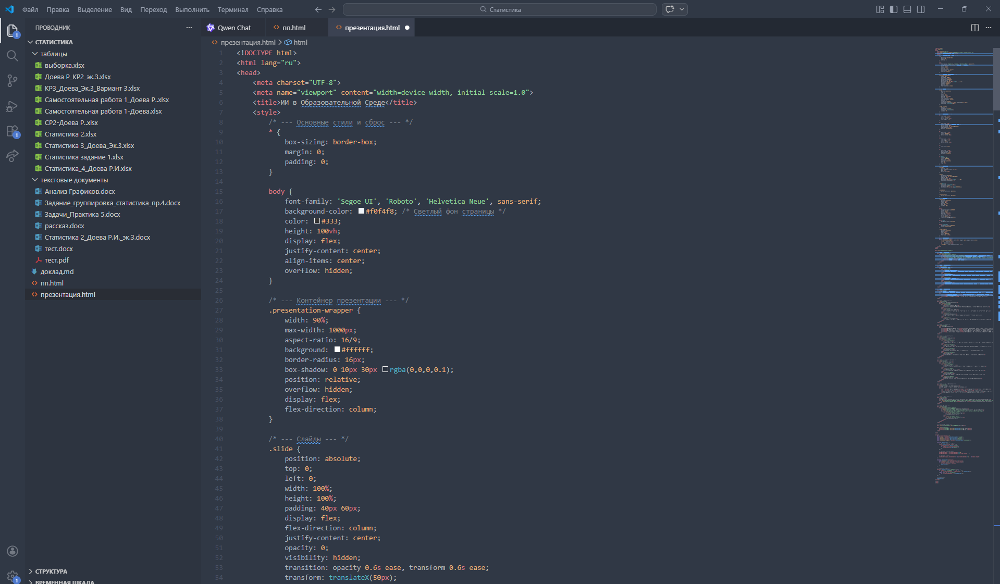
Открытие презентации в браузере. После сохранения HTML-файла презентацию необходимо открыть в браузере. Для этого можно:
- найти файл
presentation.htmlв папке проекта; - дважды щёлкнуть по нему мышью;
- либо открыть его через браузер вручную.
После этого презентация отобразится как полноценная веб-страница.
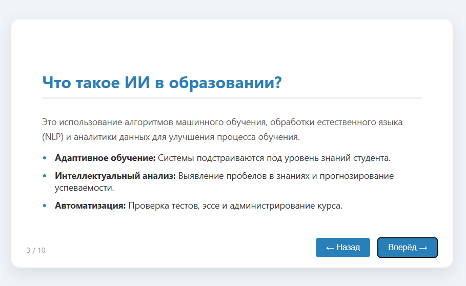
Если код вставлен корректно, внутри файла presentation.html должны присутствовать следующие основные элементы:
- структура HTML-документа (
<!DOCTYPE html>,<html>,<head>,<body>); - блоки оформления (
<style>); - блоки с содержанием слайдов;
- элементы навигации;
- скрипт переключения слайдов (
<script>).
После получения первого варианта HTML-презентации рекомендуется улучшить её оформление. Часто нейросеть создаёт рабочую, но достаточно простую версию. Поэтому полезно дополнительно запросить улучшение дизайна.
Пример подробного промта:
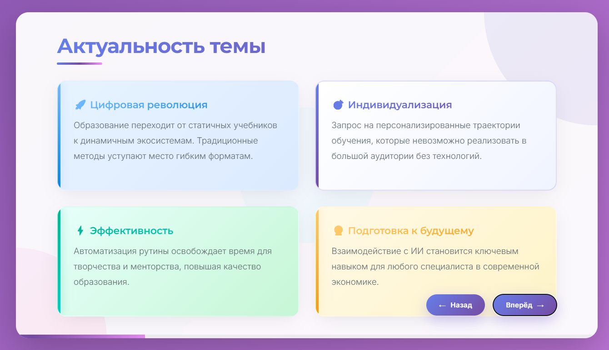
Если презентация предназначена для защиты реферата, проекта или учебного доклада, её оформление должно быть не только красивым, но и уместным для академической среды. Для этого можно использовать отдельный запрос.
Пример подробного промта:
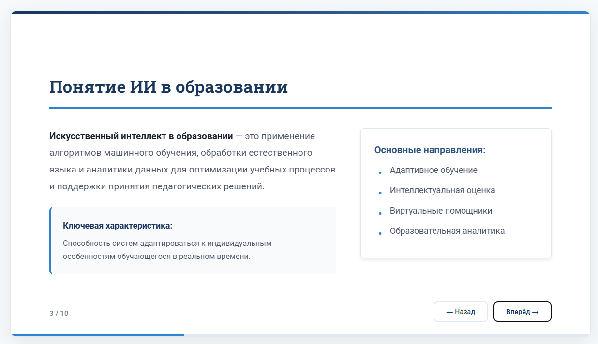
После генерации презентации студент может заметить, что некоторые слайды перегружены текстом. В этом случае нейросеть можно использовать для сокращения и упрощения содержания.
Примеры полезных промтов:
- «Сократи текст данной презентации так, чтобы каждый слайд содержал только ключевые мысли.»
- «Сделай текст на слайдах более кратким и удобным для восприятия.»
- «Преобразуй длинные абзацы в короткие тезисы для слайдов.»
- «Сделай текст более понятным и логичным для устного выступления.»
При создании HTML-презентации в Visual Studio Code нейросеть может не только сгенерировать структуру и оформление слайдов, но и вставить изображения в код презентации. Однако для этого необходимо правильно указать путь к файлу изображения, чтобы нейросеть смогла встроить его в HTML-код.
Перед тем как просить нейросеть вставить изображение в презентацию, необходимо:
- создать папку
images(или другое название) внутри папки проекта; - поместить в неё нужные изображения;
- убедиться, что файл имеет понятное имя;
- желательно использовать латинские буквы и цифры в названии файла (например,
ai.jpg,education_slide.png).
Чем проще название файла, тем легче его использовать в коде и в запросах к нейросети.
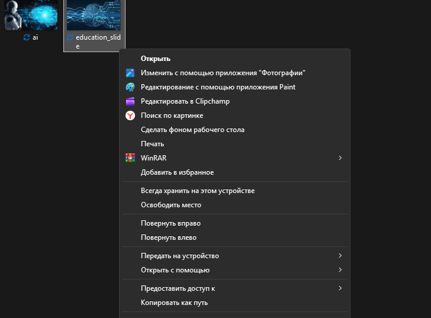
- «Добавь в HTML-презентацию изображение с путём [вставьте путь файла] на слайд [название слайда]. Размести изображение под текстом слайда, сделай его аккуратным, адаптивным, со скруглёнными углами и современным оформлением.»
- «Вставь в HTML-код моей презентации изображение [вставьте путь файла] на слайд [название слайда]. Размести изображение под списком тезисов, сделай его шириной около 500 пикселей, добавь скруглённые углы, отступ сверху и мягкую тень. Сохрани общий современный стиль презентации.»
- «Добавь в HTML-презентацию изображение [вставьте путь файла] на слайд [название слайда]. Размести текст слева, а изображение справа. Сделай слайд современным и аккуратным: используй карточки, отступы, скругления, удобочитаемый текст и адаптивное расположение элементов.»
- «Добавь в HTML-презентацию два изображения: [вставьте путь файла] и [вставьте путь файла]. Первое изображение вставь на слайд [название слайда], второе – на слайд [название слайда]. Сделай оба изображения аккуратными, адаптивными, одинаково оформленными и визуально согласованными с общим стилем презентации.»
Анализ информации
Под анализом информации в данном случае понимается работа с текстами, статьями, PDF-документами, таблицами, заметками, учебными материалами, интернет-источниками, результатами наблюдений, исследованиями и иными файлами, необходимыми для выполнения учебной работы.
Анализ информации в Visual Studio Code осуществляется за счёт работы с различными типами данных и инструментов в одной среде: пользователь может открывать текстовые документы, таблицы, PDF-файлы, выполнять поиск по всем материалам проекта, использовать расширения (например, Jupyter для анализа данных или ИИ-ассистентов для обработки текста), а также структурировать и сопоставлять информацию из разных источников. Такой подход позволяет не только просматривать данные, но и выявлять закономерности, сравнивать материалы и формировать обоснованные выводы в рамках учебной работы.
Создание рабочей папки для анализа информации. Перед началом анализа рекомендуется создать отдельную папку проекта, в которой будут храниться все материалы. Для этого необходимо в левой панели Explorer (Проводник) нажать кнопку «Новая папка» и ввести название (например, Анализ_информации).
Создание структуры файлов для анализа. Чтобы работа была организованной, рекомендуется заранее создать несколько файлов. В папке Анализ_информации можно создать, например, такие файлы (подробнее про используемые форматы смотреть в п. Настройка агентов):
материалы_для_анализа.md;ключевые_идеи.md;сравнительный_анализ.md;таблица_сравнения.md;выводы.md;итоговый_анализ.md.
Точное указание файлов в запросе. При работе с нейросетью в Visual Studio Code важно уметь точно указывать, с какими материалами нужно работать. Если в папке проекта есть несколько файлов, то в запросе рекомендуется прямо указывать их названия.
Пример правильной формулировки:
Или:
Если нейросеть не видит содержимое файла. Если нейросеть не может автоматически «понять» содержимое нужного файла, студент может:
- открыть документ;
- скопировать нужный фрагмент;
- вставить его в окно чата;
- дать конкретное задание.
Пример подробного промта:
Как попросить нейросеть сделать готовый текст для файла. Чтобы результат был удобен для вставки в файл, рекомендуется сразу уточнять формат ответа.
Пример подробного промта:
Использование GitHub Copilot для создания итогового файла. После создания файлов студент также может обратиться к GitHub Copilot и попросить подготовить готовый итоговый файл с текстом.
Пример:
Во многих учебных работах важно не только пересказать материал, но и провести оценочный анализ.
Пример промта:
Одним из наиболее удобных способов анализа является представление информации в виде таблицы. Для этого можно создать файл: Таблица_сравнения.md.
Пример промта:
Если студент хочет, чтобы итоговый аналитический файл выглядел более аккуратно и академично, можно попросить нейросеть заранее оформить его по структуре.
Пример промта:
Работа с таблицами и данными
Visual Studio Code может использоваться для хранения таблиц, просмотра данных и подготовки аналитических комментариев по результатам исследования.
Работа с таблицами и данными в Visual Studio Code осуществляется с помощью специализированных расширений для просмотра и редактирования Excel-, CSV- и JSON-файлов, а также инструментов анализа данных, таких как Jupyter Notebook. Это позволяет открывать табличные данные прямо внутри среды, выполнять их структурирование, фильтрацию, визуализацию и последующую обработку без перехода в сторонние приложения.
Создайте отдельную подпапку «Данные».
Сохраните в неё таблицы и связанные материалы.
Откройте таблицу в Visual Studio Code.
Создайте отдельный файл для фиксации наблюдений и выводов.
Если в рабочей папке проекта находится несколько файлов, при работе с нейросетью рекомендуется точно указывать названия нужных файлов (например, Результаты_опроса.xlsx, Сравнение_платформ.xlsx).
Пример запроса:
Или:
Смысловой анализ таблицы. Одной из основных задач при работе с данными является смысловой анализ таблицы.
Пример промта:
После просмотра таблицы студенту часто нужно понять, что именно важно в этих данных.
Пример промта:
Иногда студенту нужно не просто проанализировать данные, а подготовить краткое описание таблицы для реферата, отчёта или доклада.
Пример промта:
Нейросеть можно использовать для создания удобной аналитической таблицы по заранее заданным параметрам.
Пример промта:
Подготовка к экзаменам и зачётам
Visual Studio Code может использоваться как удобное пространство для систематизации учебных материалов и подготовки к экзаменам, зачётам и тестированию.
Подготовка к экзаменам и зачётам в Visual Studio Code может быть организована за счёт систематизации конспектов, лекций и учебных материалов в едином проекте, быстрого поиска по всем документам, использования ИИ-ассистентов для генерации вопросов, кратких выжимок и пояснений, а также применения Markdown и других инструментов для создания структурированных шпаргалок, чек-листов и планов повторения.
Создайте отдельную папку по учебной дисциплине.
Разделите материалы по темам или билетам.
Создайте отдельные файлы для: кратких ответов, терминов, определений, вопросов для самопроверки и т.д.
На первом этапе рекомендуется определить, какие темы необходимо повторить. Если у студента есть список экзаменационных вопросов, его можно использовать как основу для структуры подготовки.
Пример запроса:
После определения тем рекомендуется подготовить по каждой теме краткий и понятный конспект.
Пример запроса:
Один из самых эффективных способов подготовки – это составление готовых ответов на вопросы.
Пример запроса:
Если у студента уже есть файл с вопросами, можно использовать более точный запрос:
Для эффективного повторения полезно собрать ключевые определения и термины в отдельный файл.
Пример запроса:
Если в процессе подготовки студент понимает, что какие-то темы усваиваются хуже, их рекомендуется вынести отдельно.
Пример запроса:
Нейросеть можно использовать для подготовки вопросов для самопроверки.
Пример запроса:
Помощь нейросети в написании аннотаций
Аннотация - это краткая характеристика статьи, курсовой или исследовательской работы, которая раскрывает её тему, цель, основные результаты и выводы. Написание качественной аннотации часто вызывает трудности, но нейросеть может стать отличным помощником.
В Visual Studio Code с расширениями Qwen или GitHub Copilot Chat вы можете автоматически сгенерировать аннотацию на основе текста вашей работы. Достаточно скопировать ключевые разделы (введение, цели, выводы) и дать чёткий запрос.
Как составить эффективный запрос для генерации аннотации
Соберите исходный материал - вставьте в чат нейросети следующие части вашей работы:
- тему работы;
- цель и задачи исследования;
- краткое описание методов или хода работы;
- основные выводы или полученные результаты.
Используйте готовый шаблон промта - скопируйте и адаптируйте под свою тему.
Цель работы: [опишите цель].
Методы / ход работы: [кратко опишите].
Полученные результаты: [основные выводы].
Требования к аннотации:
- объём: 100–200 слов;
- академический стиль;
- кратко отразить цель, ход и результаты;
- не использовать местоимения «я», «мы»;
- язык: русский.
Оформи аннотацию как готовый текст для курсовой работы.»
Уточните и доработайте результат - нейросеть может выдать черновик, который лучше отредактировать. Попросите её сократить или расширить текст:
- или -
«Расширь аннотацию, добавь информацию о практической значимости работы.»
Примеры аннотаций, сгенерированных нейросетью
Тема: «Разработка веб‑приложения для управления учебными проектами»
Тема: «Использование ИИ‑ассистентов в обучении программированию»
Универсальный промт для аннотации курсовой/статьи:
«Напиши аннотацию для [курсовой работы / научной статьи / диплома] на тему: [тема работы].
Описание работы: [краткое описание, 2–3 предложения о содержанию].
Цель исследования: [цель].
Методы / подход: [какие методы использовались].
Основные результаты / выводы: [перечислите ключевые итоги].
Требования:
– объём: 100–200 слов;
– академический стиль (без «я», «мы»);
– отразить цель, ход, результаты и практическую значимость;
– язык: русский.
Выдай только текст аннотации, без лишних комментариев.»
Где это можно использовать? В дипломных, курсовых, научных статьях, отчётах по практике, исследовательских проектах. Экономит время и помогает структурировать мысли.
«Напиши аннотацию для [курсовой работы / научной статьи / диплома] на тему: [тема работы].
Описание работы: [краткое описание, 2–3 предложения о содержанию].
Цель исследования: [цель].
Методы / подход: [какие методы использовались].
Основные результаты / выводы: [перечислите ключевые итоги].
Требования:
– объём: 100–200 слов;
– академический стиль (без «я», «мы»);
– отразить цель, ход, результаты и практическую значимость;
– язык: русский.
Выдай только текст аннотации, без лишних комментариев.»
🌐 Перевод научных статей с английского на русский
Нейросети (Qwen, ChatGPT, GitHub Copilot Chat) хорошо справляются с переводом научных текстов, но важно правильно составить промт. Ниже приведены готовые шаблоны для разных ситуаций.
Для перевода аннотаций, рефератов, введений.
Для статей, где важны библиографические ссылки.
Для узкоспециализированных текстов (медицина, физика, IT).
Когда нужно понять общий смысл, а не идеальный перевод.
Для адаптации перевода под конкретные требования (журнал, ВАК, учебное заведение).
Для проверки качества перевода (нейросеть переводит туда-обратно).
Для статей с таблицами, формулами, цифрами.
Возможные проблемы
Что делать:
- - Перезапустите VS Code – часто этого достаточно.
- - Проверьте левую панель – после перезапуска должна появиться новая иконка (логотип Qwen, ChatGPT и т.п.). Нажмите на неё.
- - Если иконки нет, откройте чат через командную палитру:
- - нажмите
Ctrl+Shift+P; - - начните вводить название расширения, например
Qwen: Open Chat; - - выберите команду и нажмите Enter.
- - нажмите
- - Если команды тоже нет – расширение не установилось правильно. Откройте расширения (
Ctrl+Shift+X), найдите его, нажмите шестерёнку → Disable, затем снова Enable, и перезапустите VS Code.
Что делать:
- - Проверьте интернет – откройте любой сайт в браузере (например, google.com). Если сайты не открываются – проблема с интернетом.
- - Перезапустите VS Code – закройте программу полностью, откройте снова, попробуйте написать простой запрос, например: «Привет, как дела?».
- - Проверьте, выбрано ли правильное расширение – на левой панели нажмите на иконку нейросети. Если у вас установлено несколько расширений, отключите ненужные (шестерёнка → Disable).
- - Перезагрузите окно VS Code:
Ctrl+Shift+P→ «Reload Window». Попробуйте снова. - - Если ошибка осталась – сделайте скриншот ошибки и покажите преподавателю.
Что делать:
- - В панели расширения (там, где открыт чат) обычно есть список всех ваших диалогов. Ищите слева или сверху раздел «Chats», «History» или просто список с названиями.
- - Чтобы открыть старый чат – нажмите на его название. Чтобы создать новый – нажмите кнопку «New Chat» (плюсик или «+»).
- - Возможно, расширение не сохраняет историю. Некоторые расширения требуют входа в аккаунт для сохранения истории. Проверьте настройки расширения (иконка шестерёнки).
Важно: старые чаты не удаляются сами. Если вы не видите список, возможно, панель истории свёрнута – нажмите на иконку «History» или «Список чатов».
Что делать:
- - Самый быстрый способ: нажмите
Ctrl+B(это показывает/скрывает боковую панель). - - Если боковая панель открыта, но чат не виден – посмотрите на иконки сверху. Нажмите на иконку вашего расширения.
- - Если иконка пропала – значит, расширение отключилось. Откройте расширения (
Ctrl+Shift+X), найдите ваше расширение и нажмите «Enable». - - Крайний случай: нажмите
Ctrl+Shift+P, введите «Reload Window» и нажмите Enter. VS Code перезагрузится, и панели вернутся.
Что делать:
- - У некоторых расширений есть ограничение на длину ответа. Если ответ слишком длинный, он может обрезаться.
- - Попросите нейросеть: «Выдавай ответ по частям. Сначала первую половину, потом я скажу "продолжи"» или «Разбей ответ на несколько сообщений».
- - Если проблема повторяется постоянно – проверьте настройки расширения. Возможно, там можно увеличить лимит символов.
Что делать:
- - В VS Code файлы открываются так:
Ctrl+O– открыть файл (выбрать в проводнике). Или перетащить файл мышкой из папки в окно VS Code. - - Если файл не открывается: проверьте, не занят ли файл другой программой (например, Word или Adobe Reader). Закройте файл в других программах, попробуйте снова.
- - VS Code не умеет показывать PDF как текст. Нужно скопировать текст из другой программы (браузера, Adobe Reader) и вставить в чат. Также можно попросить GitHub Copilot Chat переконвертировать нужный файл в подходящий формат.
Что делать:
- - Где VS Code сохраняет файлы по умолчанию: если вы не выбирали папку, VS Code мог сохранить файл в последнюю открытую папку или в домашнюю директорию пользователя. Нажмите
Ctrl+O(открыть файл) и посмотрите, в какой папке вы находитесь. - - Как найти потерянный файл: в VS Code нажмите
Ctrl+P(быстрый поиск файлов) и начните вводить название файла. В Windows откройте проводник, в строке поиска введите имя файла. - - Чтобы не терять в следующий раз: перед сохранением нажмите
Ctrl+S– появится окно «Сохранить как», где вы сами выберете папку и имя файла. Называйте файлы понятно, например: «презентация_биология_1вариант.txt».
Что делать:
- - VS Code иногда «устаёт» – особенно если открыто много вкладок или расширений.
- - Перезагрузите VS Code без закрытия вкладок: нажмите
Ctrl+Shift+P, введите «Reload Window» и нажмите Enter. VS Code перезагрузится, чат откроется заново, история сохранится. - - Если не помогло – закройте VS Code полностью и откройте снова.
Что делать:
- - Некоторые расширения не справляются с очень длинным текстом (более 10–20 тысяч символов).
- - Разбейте текст на части (по 5–10 абзацев) и отправляйте частями, как описано в проблеме 5.
- - Если VS Code завис: подождите 1–2 минуты – возможно, он обрабатывает текст. Если не отвечает – закройте VS Code через диспетчер задач (
Ctrl+Shift+Esc→ найти VS Code → «Снять задачу»). Откройте заново и попробуйте отправить текст меньшими частями.
Что делать:
- - Многие расширения для нейросетей требуют, чтобы был установлен Python.
- - Как проверить: откройте терминал в VS Code (нижняя панель, иконка >_ или нажмите
Ctrl+`). Напишитеpython --versionи нажмите Enter. Если пишет «не является внутренней или внешней командой» – Python не установлен. - - Что делать: скачайте Python с официального сайта (https://www.python.org/), при установке обязательно поставьте галочку «Add Python to PATH». Перезагрузите VS Code после установки.
Важно: иногда будет достаточно загрузить внутреннее расширение Python.
Что делать:
- - Проверьте, что Python добавился в PATH: закройте VS Code полностью. Откройте командную строку Windows (
Win+R→cmd→ Enter). Напишитеpython --version– если показывает версию, всё хорошо. - - Если в командной строке работает, а в VS Code нет: перезагрузите компьютер (иногда нужно). В VS Code нажмите
Ctrl+Shift+P, введите «Python: Select Interpreter» и выберите установленную версию Python. - - Если не помогло: переустановите Python, снова убедившись, что галочка «Add to PATH» стоит.
Ctrl+Shift+P → «Reload Window»). Это решает большинство мелких сбоев без потери данных.